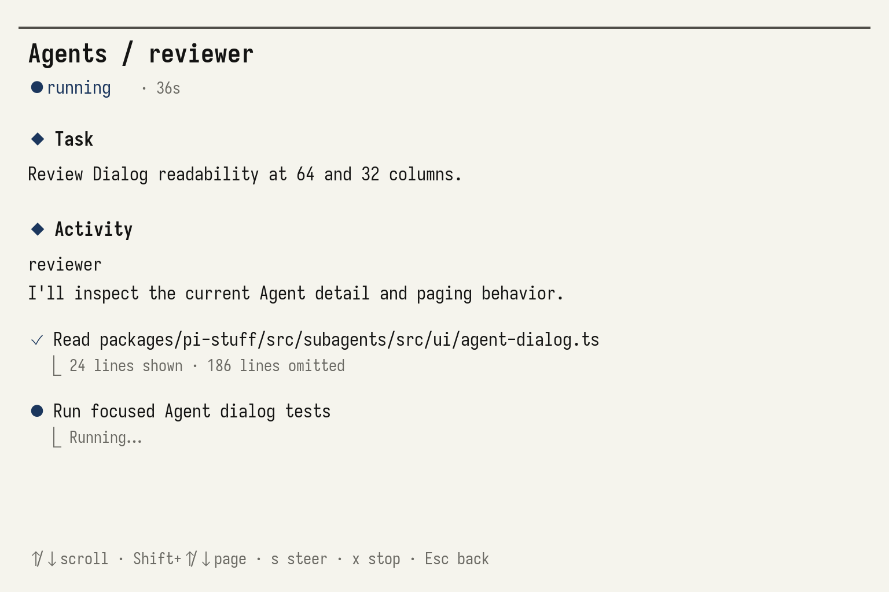
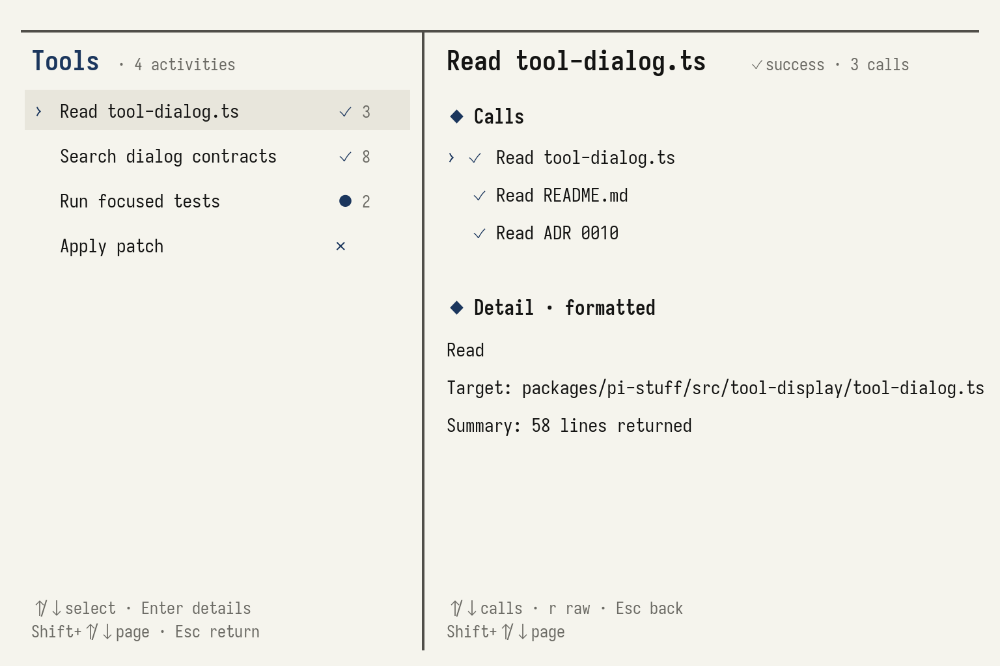
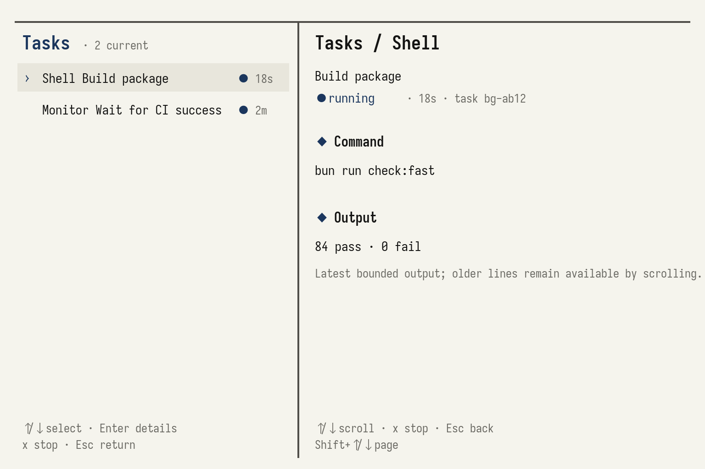
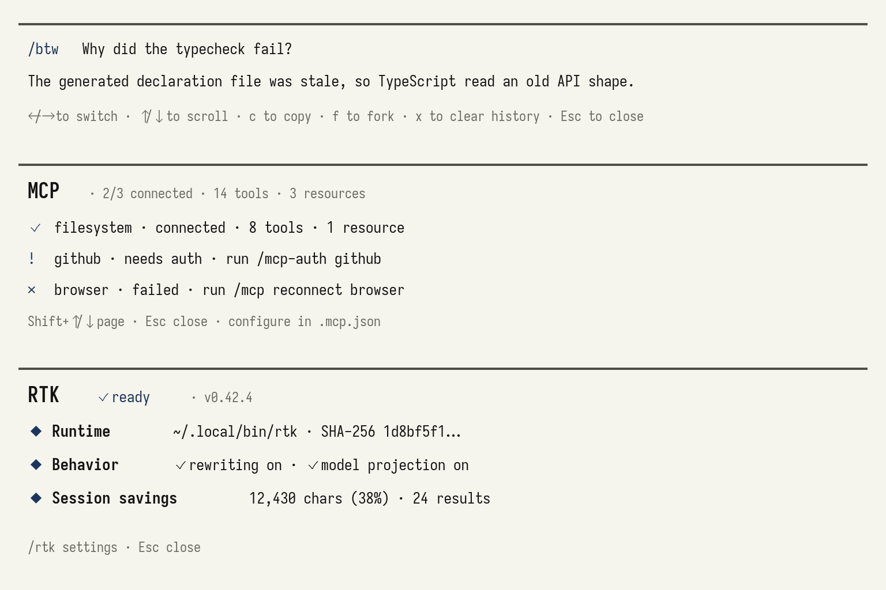

这次重做不是把所有 Dialog 画成同一张表，而是统一它们的阅读语言，再让每个 Dialog 按自己的任务展示最重要的信息。共同规则负责降低学习成本，各自的内容结构负责让用户在几秒内看懂当前页面。
报告标题：Pi Stuff Dialog 可读性重做报告。
| 这份报告里的标记 | 意思 |
|---|---|
| 已决定 | 设计已经写入 ADR 或模块 README，可作为实现依据。 |
| 已实现 | 源代码、聚焦测试和真实 PTY 预期已经同步；最终合并仍以仓库完整检查为门槛。 |
| 不在范围 | 本次不顺手重做 Transcript、SettingsList、Roster、Todo 或 Statusline。 |
8 个 Dialog 应该让人一眼认出它们属于同一个产品，但不应该强迫它们展示同样的板块。共同语言只管选择、状态、板块、翻页和退出，各 Dialog 仍按自己的任务组织内容。
共同语言包含 5 件事：› 只表示选中，状态由固定图标表达，普通详情板块用 ◆ 标记，翻页同时支持 PageUp/PageDown 与 Shift+Up/Down，Esc 始终沿着详情、列表、Dialog 的层级返回。用户学会一次，就能在 8 个页面复用。
真正需要区别的是内容。例如 /agents 要围绕 Agent 名称、任务和活动来读，/mcp 要快速看服务器是否可用，/ctx 要先看上下文用了多少。把它们硬塞进同一套 State、Task、Detail 行，只会让页面看起来整齐，却不好读。
| 命令 | 用户打开它时最想知道什么 | 页面形状 |
|---|---|---|
/agents | 哪个 Agent，正在做什么，完整活动与结果是什么 | 始终单栏的列表 / 多层详情 |
/tools | 这一段工具工作做了什么，某次调用的详情是什么 | 宽屏固定双栏，窄屏列表 / 详情 |
/tasks | 现在还有哪些后台 Shell 或 Monitor，证据是什么 | 宽屏固定双栏，窄屏列表 / 详情 |
/ctx | 上下文用了多少，哪里需要注意，现在能做什么 | 状态概览 + 操作流程 |
/diagnostics | 出了什么问题，我现在能做什么 | 始终单栏的问题列表 / 诊断详情 |
/btw | 这个问题的答案是什么，怎样切换历史 | 始终单栏的直接阅读流 |
/mcp | 每个服务器是否可用，是否需要认证或重连 | 静态状态页 |
/rtk | 运行环境是否可信，哪些行为开启，本次节省多少 | 静态检查页 |
“统一图标”不等于每个图标在所有页面都只有一个单词。它统一的是大类：空心圆常表示尚未进入稳定工作，实心圆表示正在进行，感叹号表示需要注意，勾表示成功，叉表示失败，方块表示停止或禁用。详情里仍保留完整状态词，避免用户只靠颜色或记图标猜意思。
| 页面 | 紧凑图标 | 完整状态词仍然出现在哪里 |
|---|---|---|
| Agent | ○ ● ! ◐ ↻ ✓ × ■ | 详情页 Header |
| Tool Activity | ● ✓ × ! ■ | Activity 详情 Header |
| Diagnostics | i ! × | 详情页严重程度文字 |
| MCP | ✓ ○ × ! ■ ● | 每一行服务器状态词 |
| RTK | ✓ ○ ! × | Runtime 状态词与开关词 |
Agent name · ● running · 36s ◆ Task Review Dialog readability at 64 and 32 columns. ◆ Activity ✓ Read agent-dialog.ts · completed ⎿ 24 lines shown · 186 lines omitted Shift+↑/↓ page · Esc back
◆ 只在板块标题这一行出现。标题、正文、Agent 名称、工具行、⎿ 预览和换行后的内容共享同一个左边界。这样保留层级，但不会越套越深。
• 已经确定，本次不改它。Dialog 沿用 Transcript 克制、按语义表达状态的语言，但不会把这个通用消息标记当作生命周期图标。Pi 原生 SettingsList 也保留原生键盘行为。Agent roster、Todo、BTW、Permission 和 Tool 状态继续各守一个权威位置。
Agent 名称是 /agents 的第一阅读锚点。列表先展示名称，详情页再按 Task、可选结果和 Activity 展开，用户不需要先穿过 State、Task、Transcript 三行才能知道自己正在看谁。
列表保持启动顺序，不按状态重新排序。每行从 Agent 名称开始，后面可带一句任务摘要，最右侧才是状态图标与时间。这样状态变化不会让整张列表跳动，用户也能凭名称稳定地找到同一个 Agent。
详情页在任何状态下都使用同一副单栏骨架：顶部是 Agent 名称和完整状态，Task 永远存在，Result、Error 或 Partial result 只在确实有内容时出现，Activity 永远存在。Activity 保留完整相关顺序，但每次工具输出只给有限预览，并明确说明省略了多少行。

Agents / reviewer ✓ completed · 18s ◆ Task Review the /agents dialog for readability at 64 and 32 columns. ◆ Result The Agent name needs priority. Section labels should be stronger, and Activity should keep every event while shortening large Tool output. ◆ Activity reviewer I'll inspect the current list and detail layout. ✓ Read agent-dialog.ts · completed ⎿ 24 lines shown · 186 lines omitted ↑/↓ scroll · Shift+↑/↓ page · r resume · Esc back
这里的 Activity 指“按真实先后顺序发生的可见活动”。它不是只留三条最新记录，也不是把整个原始协议文件原样倒出来。Agent 说过的话、用户明确给过的 steer 或 resume、每次 Tool 的目标、结果和有限预览都保留；内部系统记录、原始 JSON、重复 Task 和重复最终 Result 不出现。
大输出只在自己的位置缩短，例如写成“24 lines shown · 186 lines omitted”。页面不会因为输出大，就悄悄删掉更早或更晚的 Activity。运行中的 Tool 也只占一行，从 ● 原地更新为 ✓ 或 ×，不会完成后再追加一份。
| Agent 状态 | 结果板块 | Footer 中可用动作 |
|---|---|---|
| queued / running | 不出现 | s steer、x stop |
| waiting | 不出现 | s reply、x stop |
| stopping | 不出现 | 不显示会被拒绝的 stop |
| completed | Result | r resume |
| failed / crashed | Error，可带 Partial result | r resume |
| stopped / cancelled | 有内容时才出现 Partial result | stopped 可 resume，cancelled 无动作 |
/tools 的主角是用户能理解的一次 Activity，也就是一段连续的工具工作，而不是内部调用 ID。列表先写它做了什么，详情再按需要展开调用和格式化结果。
列表按最新 Activity 在前排列。每行依次是选择标记、可读摘要、状态图标和可选调用次数，例如 Read · tool-dialog.ts ✓ 3 calls。屏幕变窄时先去掉调用次数，不能先丢掉摘要或状态。
包含多次调用的 Activity 展示 Calls 和 Detail 两个板块，单次调用直接进入 Detail，不为一个条目造空列表。正常详情保留各工具自己已经设计好的格式，Raw 只在调试时打开，协议 ID 不挤进日常阅读。
宽度达到 96 格且列表非空时，Activity 列表与选中详情共用一块固定 18 行区域。顶部粗线连续贯穿全宽，中间只有一条粗 ┃ 分隔线；切换 Activity 不会推动编辑器。空页面和窄屏仍是单栏。

Tools / Read 4 files and searched 2 patterns ✓ success · 6 calls ◆ Calls › ✓ Read · packages/pi-stuff/src/tool-display/tool-dialog.ts ✓ Search · toolStateGlyph ◆ Detail · formatted Read Target: packages/pi-stuff/src/tool-display/tool-dialog.ts Summary: 58 lines returned
Raw protocol 的意思是“调用时保存的原始协议数据”。它包含 call ID、Tool 名称、参数、结果和 details，只为调试服务。按 r 在 formatted 与 Raw 之间切换，Esc 先从 Raw 回 formatted，再从详情回列表。
/tasks 是当前工作台，不是历史记录。它只展示当前仍活跃的 Background Shell 和 Monitor，不展示 Agent、Todo、Goal 或 Tool 调用历史。
列表先写任务类型和可辨认的名称，再写一句短说明，右侧放状态与已用时间。数据直接来自 Background Work runtime snapshot；/agents 和 /tools 各自读取自己的权威数据，不需要匹配文本或在显示阶段删掉所谓重复项。
Shell 详情需要 Command 与 Output，因为用户关心命令和输出。Monitor 详情需要 Source、Condition 与 Latest evidence，因为用户关心它在监看什么、何时结束、最新看到了什么。不同任务不再共用 State、Task、ID 三行。

/ctx 的第一任务是回答上下文用了多少、是否需要处理，而不是先展示内部组件名。页面顺序改为 Usage、Overview、Attention、Actions，内部概念在出现时立刻用普通话解释。
Usage 放最前面，用实际占用和剩余空间建立判断。Compartment 可以解释成“上下文里的分区”，Historian 可以解释成“负责压缩和回顾旧内容的后台整理器”，pending drop 可以解释成“已标记、稍后会从上下文中移除的内容”。
不会产生任何变化的 flush 或 upgrade 行默认不显示，但命令仍然可用。重建这类高影响动作使用带警告图标的确认页，并默认选中 Cancel；确认后 Dialog 先关闭，进度继续写入原有 Context Activity，不再叠一个进度窗口。
Context 72.4% · 145K / 200K tokens ◆ Overview 8 compartments · compacted history ~54K tokens Historian idle · cache 12m remaining ◆ Attention ! 2 pending drops · removals waiting to apply ◆ Actions › Wrap up history Apply 2 pending drops Rebuild compartments
Context / Confirm rebuild ! Rebuild the full eligible session? Compartment and fact data will be regenerated and may use model tokens. The original Pi conversation is kept. › Cancel Rebuild now
诊断记录要先让用户看懂发生了什么，再告诉他来自哪个 Capability。严重程度图标只表达信息、警告和错误，不借用运行中的实心圆；页面在任何宽度下都保持单栏。
列表使用 i、!、× 三种图标。每行保留来源 Capability、问题摘要、重复次数和最新发生时间，窄屏时至少留下图标、来源和一段仍有意义的摘要。记录按最新更新时间排在前面。
详情围绕 Summary、Action 和 Details 三个板块来读。Action 直接说用户下一步能做什么；Details 放诊断上下文。Severity、Occurred 这类字段不再逐行抢占首屏，因为它们已经由图标、排序和页头表达。
Diagnostics · 3 records › × Agents Failed to read Agent transcript ×3 · 2m ! Background Work Could not confirm process ownership 5m i Context Retried a stale derived-state refresh now Diagnostics / Agents × error · 3 occurrences · latest 2m ago Failed to read Agent transcript ◆ Action Run /agents again after the session file becomes readable. ◆ Details ...latest bounded and redacted diagnostic detail...
/btw question 在一条连续粗顶线下面显示近期问题、当前问题和 Markdown 答案。它没有 BTW 标题、状态行、Answer 板块、卡片或双栏。
Left/Right 切换保留的成功交流；Up/Down 滚动，PageUp/PageDown 与 Shift+Up/Down 翻一页。流式答案只在用户停在底部时自动跟随。失败信息也进入同一条答案阅读流，不另开错误板块。
Footer 使用已经观察到的 Claude 词句：c to copy、f to fork、x to clear history、Esc to close。清理历史仍在原界面内用 y 确认；Space、Enter 和 Esc 都可以关闭。
━━━━━━━━━━━━━━━━━━━━━━━━━━━━━━━━━━━━━━━━━━━━━━━━━━━━━━━━━━━━━━━━ /btw Why did the typecheck fail? The generated declaration file was stale, so TypeScript read an old API shape. ←/→ to switch · ↑/↓ to scroll · c to copy · f to fork x to clear history · Esc to close
静态状态页不需要为了统一而增加列表详情层。/mcp 以服务器名称和可用性为主，/rtk 以运行环境、行为开关和本次节省为主，两者都在一页内完成阅读。
/mcp 每行先写服务器名称，再用 ✓、○、×、!、■ 表达状态并保留状态词。资源和工具数量放在后面，认证或重连说明必须在能力列表之前出现。URL、命令、参数、环境变量和密钥继续留在安全边界外。
/rtk 分成 Runtime、Behavior、Session savings 三个板块。ready、unchecked、drifted、unavailable 都有固定图标和完整词。页面还要明说 model projection 只影响模型看到的精简副本，不会改写 Conversation Transcript 或 Session。

MCP · 2/3 connected · 14 tools ✓ filesystem · connected · 8 tools ! github · needs auth · /mcp-auth github × browser · failed · /mcp reconnect browser ■ legacy · disabled Shift+↑/↓ page · Esc close
RTK · ✓ ready · v0.42.4 ◆ Runtime ~/.local/bin/rtk · SHA-256 1d8bf5f1... ◆ Behavior ✓ rewriting on · ✓ model projection on ◆ Session savings 12,430 chars (38%) · 24 results /rtk settings · Esc close
边界：/mcp 保持只读，故障转到 /diagnostics，Tool 调用转到 /tools；页面不显示服务器 URL、命令、环境变量、OAuth 数据或 token。/rtk 的示例数字只用来检查排布，Session savings 不是费用承诺；model projection 也不会改写 Transcript、Tool result 或 Session JSONL。
本轮决策已经落实到生产代码，不再停留在 prototype。共享布局、8 个重点 Dialog、模块文档和真实 PTY 预期已经同步；报告只负责把结果集中说明，不能代替测试证据。
共享层已经提供粗 Dialog 顶线、◆ 板块标记、固定状态图标、PageUp/PageDown 与 Shift+Up/Down 的同一路径，以及一块区域式的固定双栏。双栏只由 /tools 和 /tasks 使用，数据为空时不会留下半块详情。
/tasks 已删除 Agent 投影与 current-work 聚合注册表，直接使用 Background Work runtime snapshot；/diagnostics 已固定为单栏；/btw 已按真实 Claude Code 形状去掉 Answer 板块与状态壳。Agent、Tool、Context、MCP 和 RTK 的状态图标、板块、翻页与低高度路径也已同步。
| 批次 | 内容 | 结果 |
|---|---|---|
| 1 | 共享图标、◆ 板块、翻页别名、Footer 与固定双栏 | 共享单元测试已覆盖 |
| 2 | /agents、/tools、/tasks | 列表、详情、实时更新、双栏与边界测试已覆盖 |
| 3 | /ctx、/diagnostics、/btw | 操作流程、单栏诊断、流式阅读和历史导航已覆盖 |
| 4 | /mcp、/rtk | 状态、低高度、敏感信息边界与真实 PTY 预期已覆盖 |
› 只表示当前焦点，状态图标仍然独立存在。◆ 只在标题行出现，正文没有额外层层缩进；/btw 不强加板块。/tasks 只读 Background Work，/agents 只管 Agent，/tools 只管调用记录；不靠字符串匹配去重。完成标准：真实 UI 代码、聚焦测试、100×32 与窄宽度渲染、完整键盘路径已经落地；最终以 bun run check 对这些代码、文档与图片的通过结果作为可合并门槛。
Command Dialog：用户明确打开的临时全宽页面。它不是浮在 Transcript 上的小窗，也不是长期占位的仪表盘。
Activity：一段按真实先后顺序发生、对用户有意义的工作记录。它可以包含 Agent 消息、Tool 调用、结果和有限预览。
Capability：Pi Stuff 包里的一个能力模块，例如 Agents、Context 或 Diagnostics。它是问题来源，不一定是用户最先需要看的标题。
Raw protocol：原始调用数据，给调试用。日常阅读优先看工具已经格式化好的标题、目标、摘要和结果。
Compartment：从旧对话整理出来的压缩分区。它帮助控制模型上下文大小，不是另一份 Pi 对话。
Historian：负责创建或重建这些压缩分区的 Context 后台整理器。
model projection：发给模型看的精简副本。它不会改写用户看到的 Transcript、Tool result 或 Session 文件。
4 张 PNG 使用浅色 Kami 配色，并由可精确控制文字的排版源渲染。它们用于检查布局、主次、密度与图标位置，不冒充真实终端截图；真实行为以源码、测试和 PTY 验证为准。